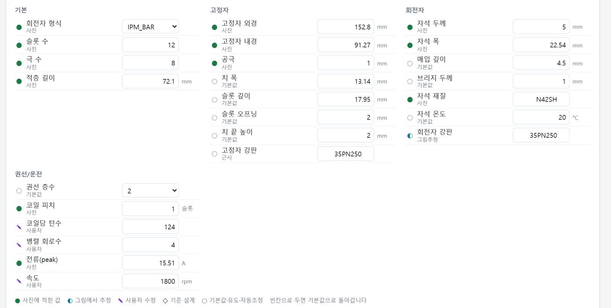
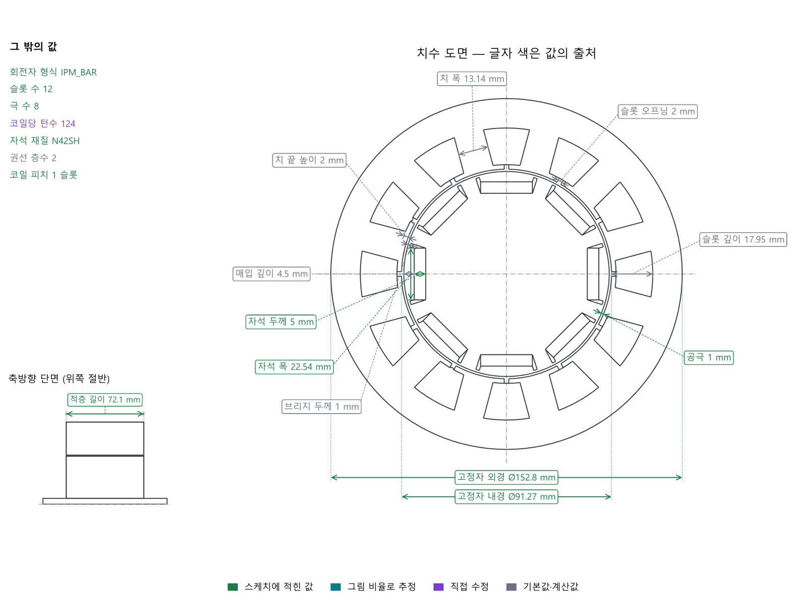
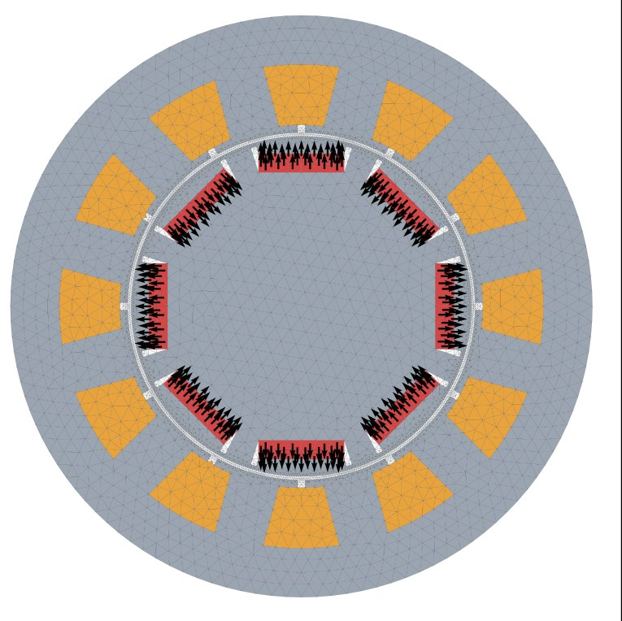
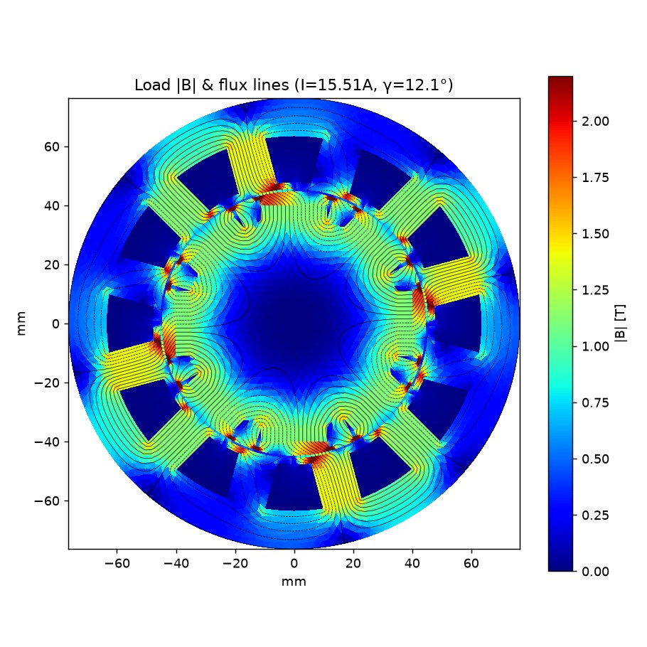

WORKFLOW
사진 한 장에서 해석 결과까지 5단계From one photo to analysis results in five steps
- 스케치 사진종이에 연필로 그린 단면과 치수 메모
- AI 인식치수 · 극수 · 슬롯 수 · 재질 · 권선 사양 읽기
- 값 확인 · 수정값마다 출처 표시, 형상 자동 검사
- 2D FEM 해석빠른 해석(약 15초) 또는 정밀 해석
- 결과 · 도면핵심 지표 · 그래프, 치수 도면 PDF · DXF
- Sketch photoCross-section drawn in pencil with dimension notes
- AI recognitionReads dimensions, poles, slots, materials and winding data
- Review & editSource shown for every value; geometry checked automatically
- 2D FEMQuick analysis (about 15 s) or detailed analysis
- Results & drawingsKey metrics, plots, and dimension drawings (PDF · DXF)




예: 12슬롯 8극 IPM 전동기 (고정자 외경 152.8 mm, 적층 길이 72.1 mm)Example: 12-slot 8-pole IPM motor (stator OD 152.8 mm, stack length 72.1 mm)